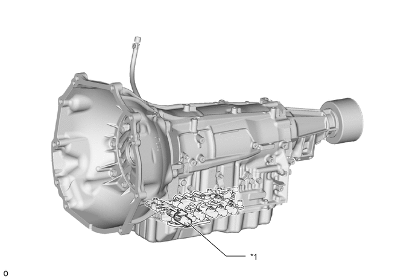
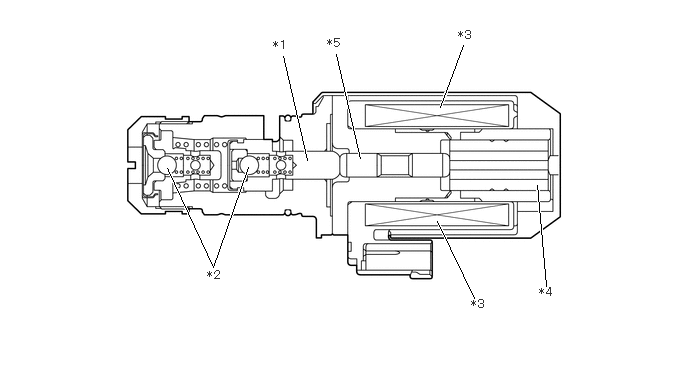
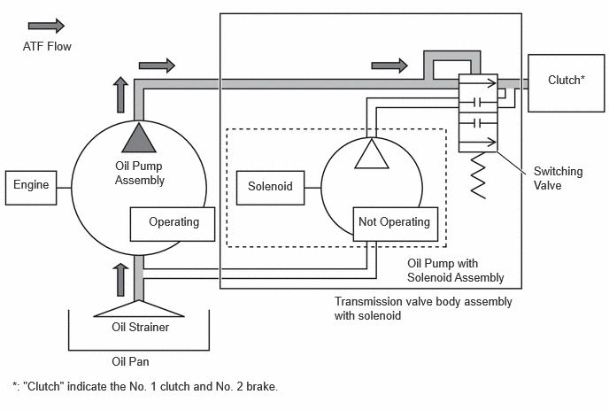
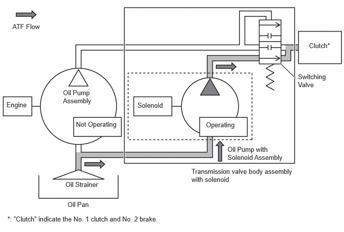
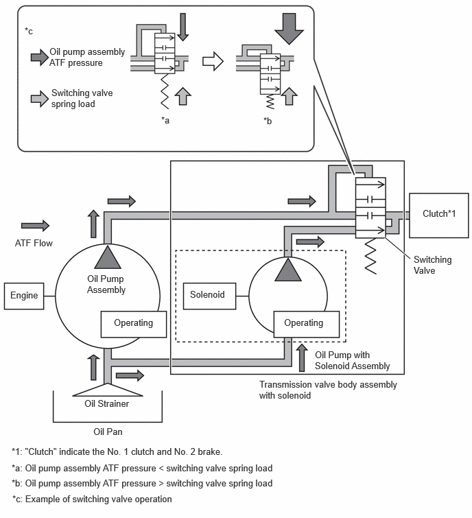

| Last Modified: 10-07-2025 | 6.11:8.1.0 | Doc ID: NM100000002GYE0 |
| Model Year Start: 2024 | Model: Tacoma | Prod Date Range: [12/2023 - ] |
| Title: IDLING STOP CONTROL: STOP AND START: OIL PUMP WITH SOLENOID; 2024 - 2026 MY Tacoma Tacoma HV [12/2023 - ] | ||
OIL PUMP WITH SOLENOID
CONSTRUCTION
(a) An oil pump with solenoid assembly is provided. The oil pump with solenoid assembly is installed to the transmission valve body assembly with solenoid. The oil pump with solenoid assembly allows for a stable supply of ATF, even during an idling stop.
(b) The oil pump with solenoid assembly is an Electro Magnetic Oil Pump (EMOP) integrated with the transmission oil passage switching valve, achieving a reduction in the size and weight of the system.
HINT:
The oil pump with solenoid assembly only operates during an idling stop. ATF is supplied by the regular oil pump assembly while the engine is running.
|
*1 |
Oil Pump with Solenoid Assembly |
- |
- |
(c) The oil pump with solenoid assembly is composed of parts such as a solenoid piston, plunger shaft, plunger solenoid assembly, check balls and solenoid coil assemblies.
|
*1 |
Solenoid Piston |
*2 |
Check Balls |
|
*3 |
Solenoid Coil Assembly |
*4 |
Plunger Solenoid Assembly |
|
*5 |
Plunger Shaft |
- |
- |
OPERATION
(a) The oil pump assembly inside the AT generates ATF pressure using engine power. At this time, ATF pressure from the oil pump assembly is greater than the spring load of the switching valve. Therefore, the switching valve operates in the direction to shut off the oil passage of the oil pump with solenoid assembly.
(b) During an idling stop, oil pump assembly operation stops. At this time, ATF pressure from the oil pump assembly is lost. Therefore, the spring load of the switching valve becomes greater than the ATF pressure from the oil pump assembly. As a result, the switching valve operates in the direction to release the oil passage of the oil pump with solenoid assembly, and operating ATF pressure is supplied to the clutch.
(c) When the engine restarts, both the ATF pressure generated by the oil pump with solenoid assembly and the ATF pressure generated by the regular oil pump assembly are used. At this time, ATF pressure from the oil pump assembly becomes greater than the spring load of the switching valve. Therefore, the switching valve operates in the direction to shut off the oil passage of the oil pump with solenoid assembly, and ATF pressure from the oil pump with solenoid assembly stops being used. The engine stop and start ECU stops the oil pump with solenoid assembly when it determines that the engine is in operation.
